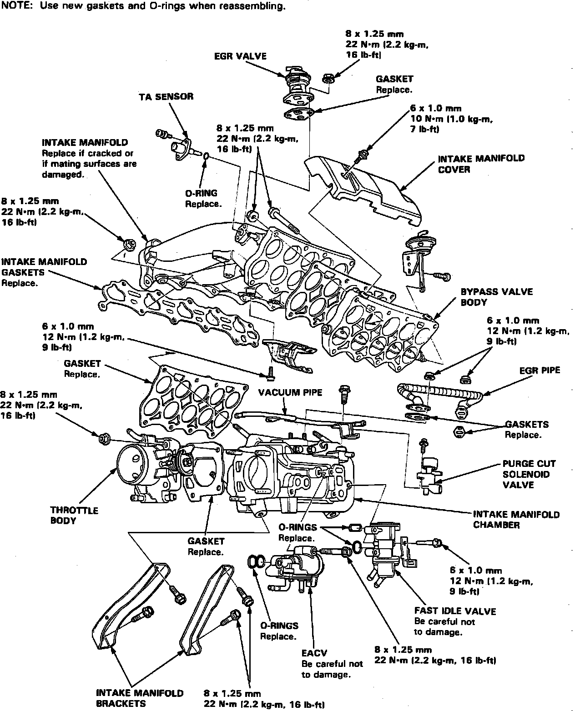
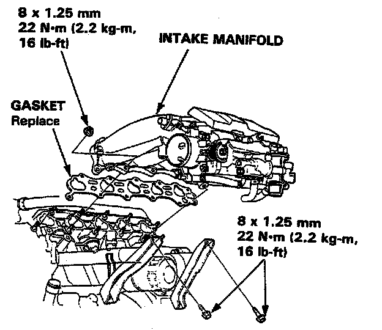

Intake Manifold: Service and Repair
Intake Manifold Installation
Fuel Pressure Relief:

Relieve fuel system pressure by loosening the service bolt on top of fuel filter one complete revolution.
Intake Manifold Replacement:


Install the intake manifold on the cylinder head, then tighten the nuts in a criss-cross pattern in two or three steps beginning with the inner nut.
Always use a new intake manifold gasket.